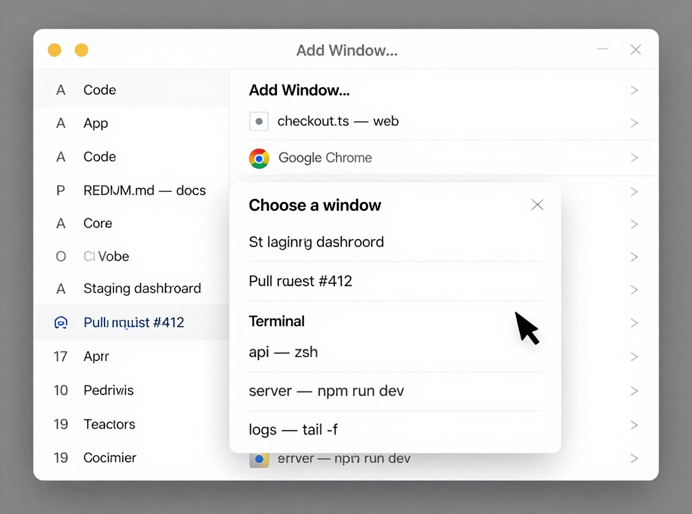
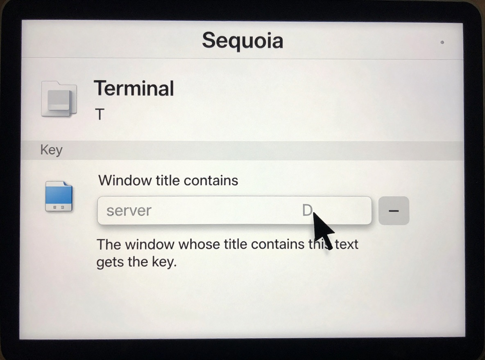
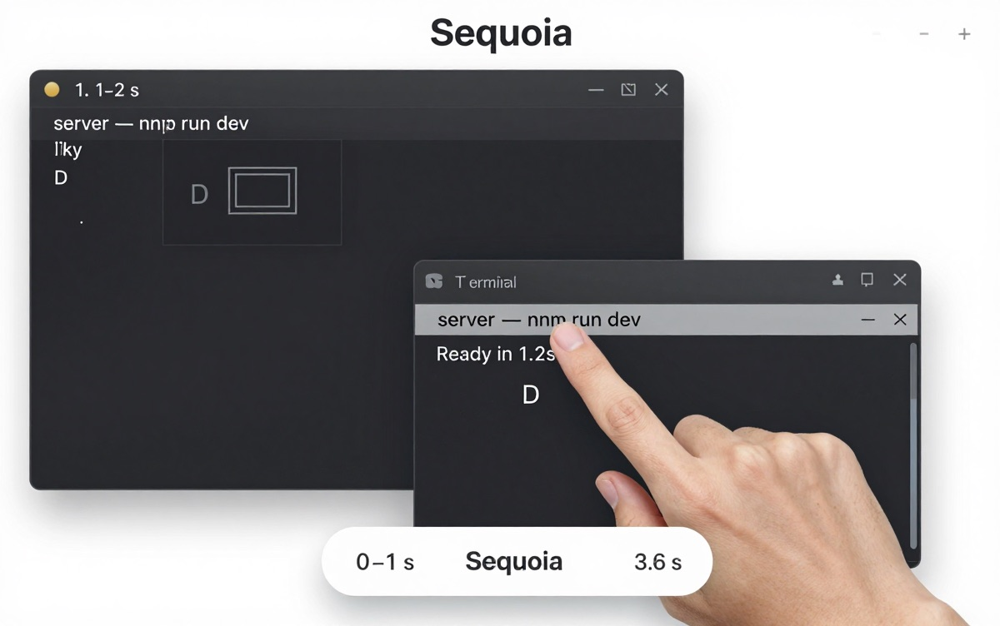

Features / A window's own key
A window's own keyOne press to the window you always want.
Some windows you visit fifty times a day: the dev server, the team chat, the draft you're writing. Give one a key of its own. Press ⌥⇥, then D, and you're in it.
● Found by its title, so it works every time the window opens
Pick the window from a list.
In Settings → Shortcuts, click Add Window…. You'll see every window that's open right now, grouped by app. Click the one you want.
- It gets a key straight away. The first free letter of its title. Click the key to change it.
- Its app comes along. If the app doesn't have a key of yours yet, it's added too.
- It lives under its app. The window shows up in the list, just below the app it belongs to.

AI draft · replaceKeep a word or two. It finds the window again.
A window shortcut matches any window whose title contains your text, ignoring case. Trim the title down to the part that doesn't change, like "server", and the key finds that window every time it opens.
- Survives restarts. Quit Terminal, open the server again tomorrow, and D still goes there.
- Any desktop. If the window is on another desktop or in full screen, macOS takes you there.
- One window per key. If several titles match, the first one listed gets the key.

AI draft · replaceOne key, straight there.
A window with its own key shows just that key in its row. No app key first, no waiting for a letter. Press it and the switcher closes on that window.
The window's app keeps its own key, and the app's other windows keep their letters. If an app key and a window key ever clash, the app key wins and Settings shows a warning on both.

AI draft · replaceSettings that change it.
In Settings → Shortcuts.
Good to know.
What if the window isn't open?
The key waits. As soon as a window with that text in its title opens, it has the key again.
Can a window's key be the same as an app's?
Settings lets you, and shows an orange warning on both. In the switcher the app key wins, so pick another key for the window.
How many windows can have their own key?
As many as you have free keys. Each one takes a key that no app will get automatically.
Does the window still have its two-key address?
Yes. Its app's key and letter still work. The row just shows the shorter one.
Press ⌥⇥. Then the next key you want.
Free for the Mac. No account, nothing running in the background, and every app has a key the moment it's installed.
Download Window Switcher for Mac